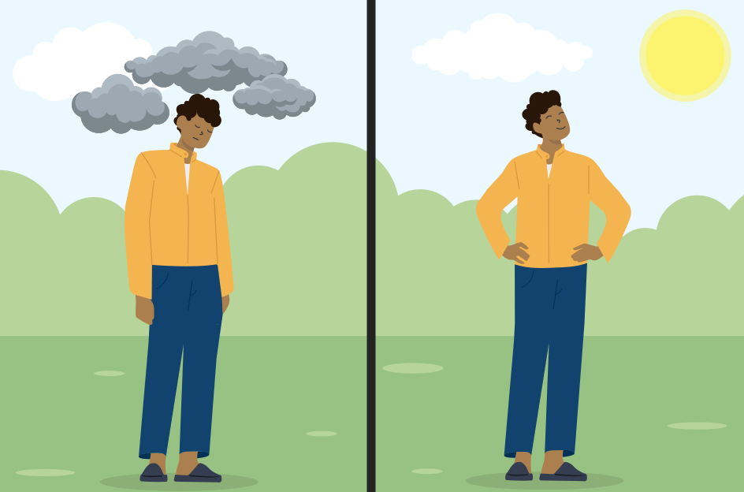

Mental health can be defined in many different ways.
How would you define mental health? Consider your answer and then compare it with the definition from the World Health Organization by selecting the ‘Show answer’ button.
Show answer
The World Health Organization (WHO) defines mental health as
a state of well-being in which the individual realizes his or her own abilities, can cope with the normal stresses of life, can work productively, and is able to make a contribution to his or her community.
The terms “mental health” and “psychological health” are synonyms, and although mental health is the more common term, these two terms will be used interchangeably throughout the course.
Mental health exists on a continuum that is experienced differently from person to person. The continuum will be discussed in Module 3.
Mental illnesses have a significant impact on the health of Canadians, as well as on the Canadian economy and Canada’s health and social care systems. About 9.1 million people (1 in 3 Canadians) will be affected by a mental illness in their lifetime. As many as 15% of Canadians (1 in 7) use health services for a mental illness each year.[3]
World Health Organization, Global Health Observatory: Mental Health and Well-Being , 2023.
Government of Canada Data Blog, Mental illness in Canada , October 8, 2020.